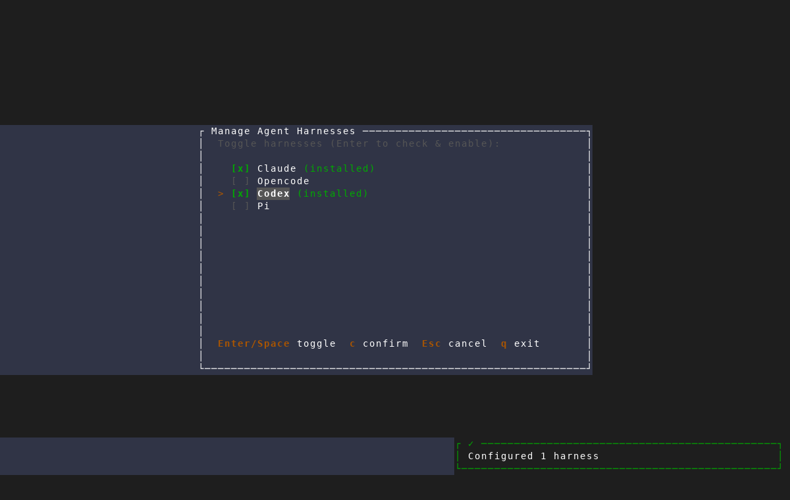
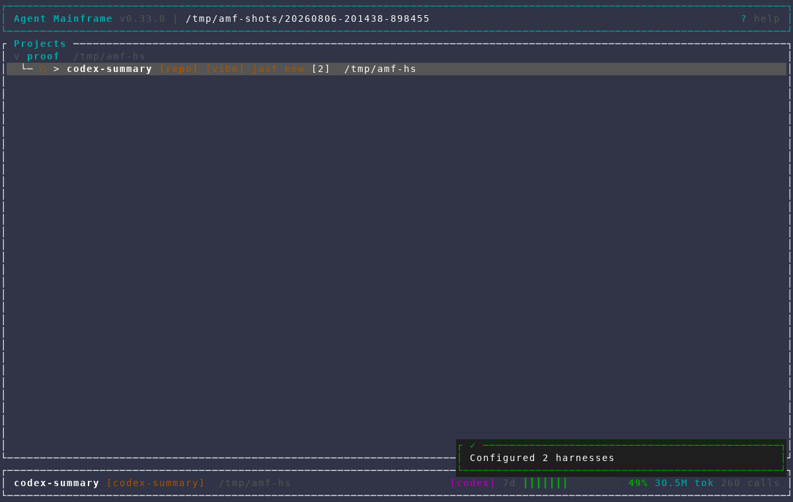
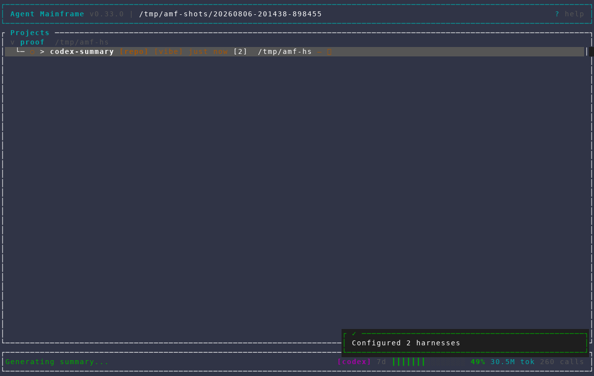
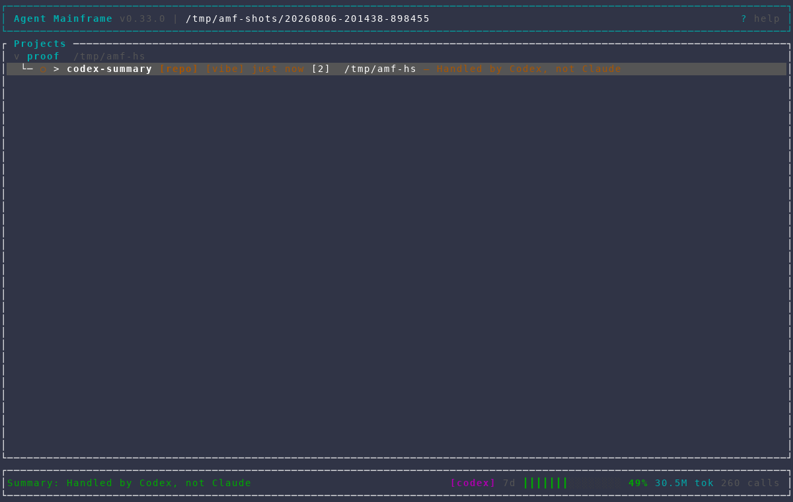

Harness-aware session summaries
plan-mode branch · isolated AMF scratch instance · deterministic Codex fixture · no provider tokens used




plan-mode branch · isolated AMF scratch instance · deterministic Codex fixture · no provider tokens used



